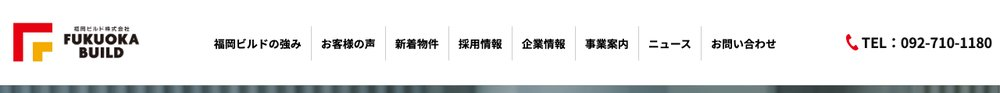
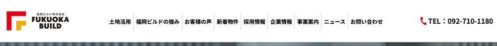
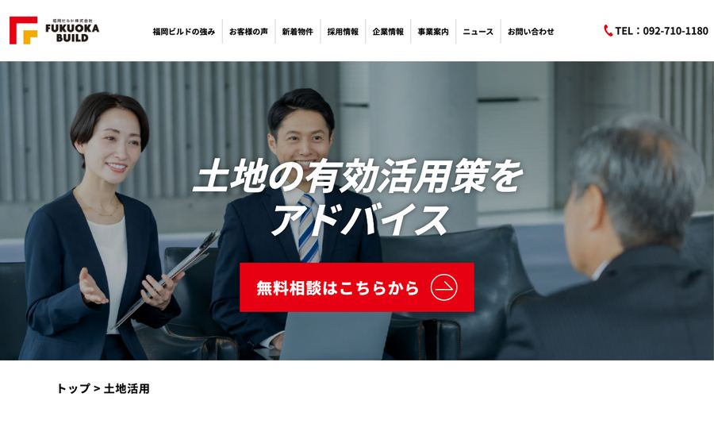
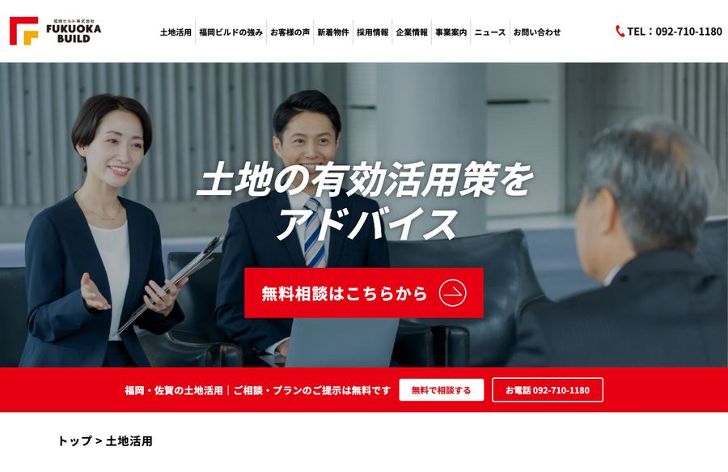
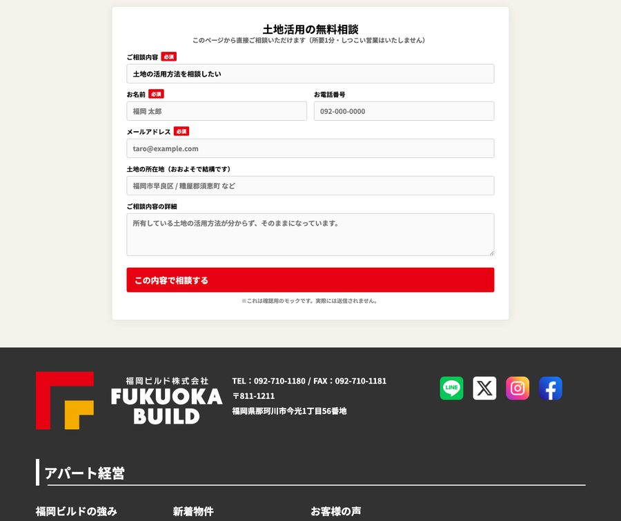
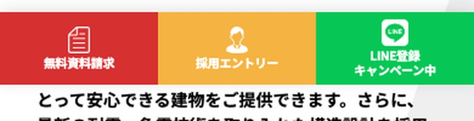
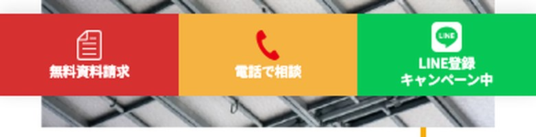
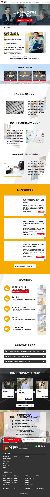
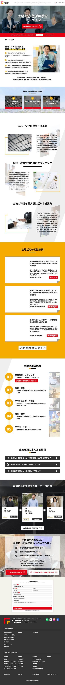

福岡ビルド株式会社｜Google広告 受け皿の提案
f-build.co.jp/land-utilization/ を広告の着地ページとして使うために、何をどう足すか
結論：広告の受け皿は、この土地活用ページを強化して使います。apart-x は使いません。新しいLPも今は作りません。
ページの中身（悩み4つ→強み3つ→相談事例→流れ5段階→FAQ→お客様の声）はよく出来ています。 足りないのは「たどり着けない」「問い合わせまで遠い」の2点だけなので、そこだけ直します。
これまで「apart-x は問い合わせ6件」と件数で見ていました。中身を1件ずつ確認したら実態が違いました。
| 日付 | 問い合わせ主 | 実態 |
|---|---|---|
| 4/23 | A様（熊本市・土地なし） | 実需だがエリア外。※同じ方が6/4にf-buildへも直接問い合わせ |
| 5/13 | B様（東京都・土地なし） | 実需だがエリア外 |
| 5/23 | C様（熊本市・土地なし） | 実需だがエリア外 |
| 6/29 | テスト送信（動作確認） | こちらのテスト |
| 7/23 | 都内の制作会社 | 営業スパム（同一人物が翌日CECにも同じ営業） |
| 8/19 | 都内のIT系企業ドメイン | 会社ドメイン。土地オーナーではない |
一方、f-build 側に来ているのは —
「福岡市内に土地がありアパートの建設を検討しています。お見積もりをお願いいたします」（2/18・要約）
「糟屋郡に所有する土地にアパートを建てる予定です」（3/28・要約）
福岡の土地オーナーご本人は、f-build 側にしか来ていません。 これが受け皿をこちらにする理由です。
ページの作り替えはしません。導線と、問い合わせまでの距離だけを直します。
グローバルナビに「土地活用」を追加する
なぜ：今ナビに入っておらず、90日で15PVしか見られていません。自然検索の74%はトップに着地するので、トップに導線が無い＝流入をほぼ全部捨てています。広告を出さなくても効きます。


960〜1440pxとスマホ360/375/390pxで、折り返さず収まることを実測済み（リンクの左右余白を12px→6pxに詰める必要あり）。
ファーストビューの直下に相談バーを置く
なぜ：広告で来た人は「ここで何ができるか・いくらかかるか」を最初の3秒で判断します。無料であることと電話番号を、スクロール前に見せます。


ページの中に相談フォームを置く（★これが一番効きます）
なぜ：今このページにフォームはありません。CTAは全部 /contact/ へのリンクで、そこから入力 → 確認 → 送信と3ページ移動します。広告費を払って連れてきた人に3回移動させるのは、着地ページとして弱いです。

項目はご相談内容・お名前・電話・メール・土地の所在地・詳細の6つ。「土地の所在地」を入れておくと、返信の前にエリア内かどうかが分かります。
スマホ追従CTAの「採用エントリー」を「電話で相談」に差し替える
なぜ：追従CTAはすでに付いています。ただし3枠のうち1枠が採用エントリーです。土地オーナーを広告で連れてくるページで、常時表示の3分の1が求人になっています。


枠の中はスクロールできます。左が現状、右が強化版です。


いきなりLPを作ると、何を直せばいいか分からないまま作ることになります。データを取ってから判断します。
STEP 1
導線と計測を直す
ナビに「土地活用」を追加。コンバージョン計測を修正。ここは広告の有無に関係なく効きます。
STEP 2
小さく1ヶ月回す
見るのはCV数より、検索語句が意図どおりか・着地ページで離脱していないか。ここで初めてこのページの実力が分かります。
STEP 3
結果を見て足す
ページ内フォーム等を追加。新しいLPが要るかどうかも、ここで判断します。
コンバージョン計測が動いていません。8/29に実際に届いた問い合わせで、GA4のCVイベント（generate_lead）が発火していませんでした。 ページビュー自体は記録されているので、計測の付け方の問題です。このままだと広告のCPAが測れないため、出稿前に直します。
株式会社斗／星崎 2026-08-30 作成
このページは社内・クライアント確認用です（noindex）。掲載している画面は、本番ページに見た目を当てて撮影したモックであり、本番サイトには一切変更を加えていません。フォームも動作しません。問い合わせ主のお名前・社名は伏せています（実名は社内資料にのみ記録）。